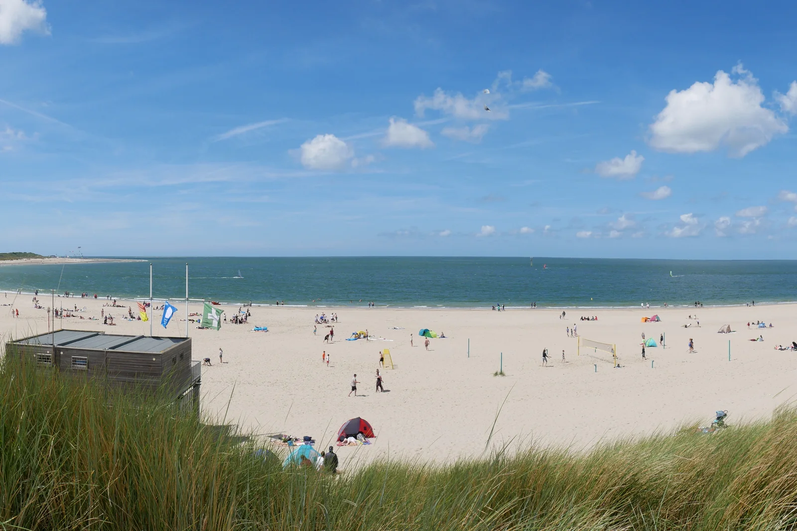

Brouwersdam
Zélande, Pays-Bas · kitesurf, windsurf, baignade

Barrage des travaux du Delta qui sépare la mer du Nord du lac de Grevelingen. Côté mer, plage de sable et vagues ; côté lac, eau plate et abritée : l’un des spots de glisse les plus fréquentés des Pays-Bas.
- Lieu
- Zélande, Pays-Bas
- Niveau
- Variable selon les conditions
- Activités
- kitesurf, windsurf, baignade
- Type d'eau
- Mer / océan
- Coordonnées
- 51.76, 3.85 (position approximative du secteur)
Dangers à connaître
- Vent fort et rafaleux en automne et en hiver.
- Spot très fréquenté les week-ends : respecte les zones de chaque activité.
Le conseil d'Ocean Buddy
Choisis ton côté selon le vent : le lac pour l’eau plate et l’apprentissage, la mer du Nord quand tu es à l’aise.
Ouvrir dans Ocean Buddy Télécharger sur l'App Store
Source : Fiche Ocean Buddy · septembre 2026 · à vérifier localement.